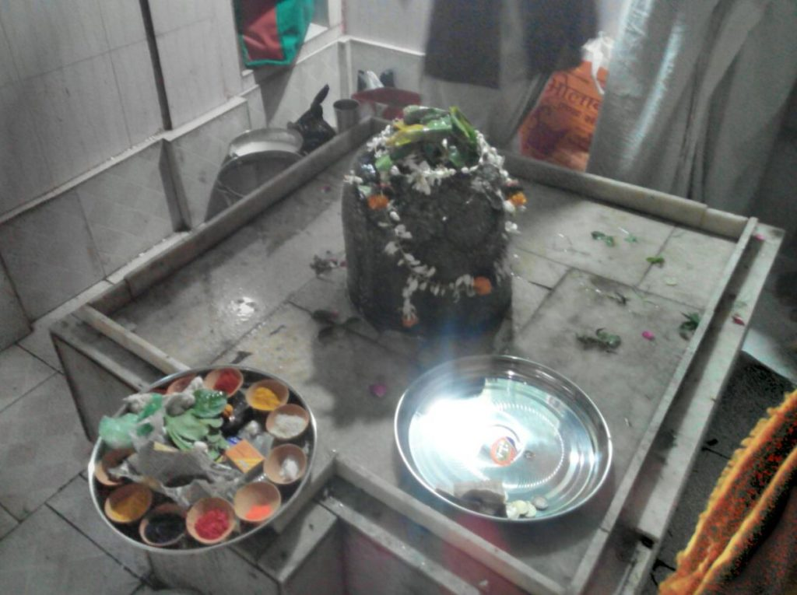
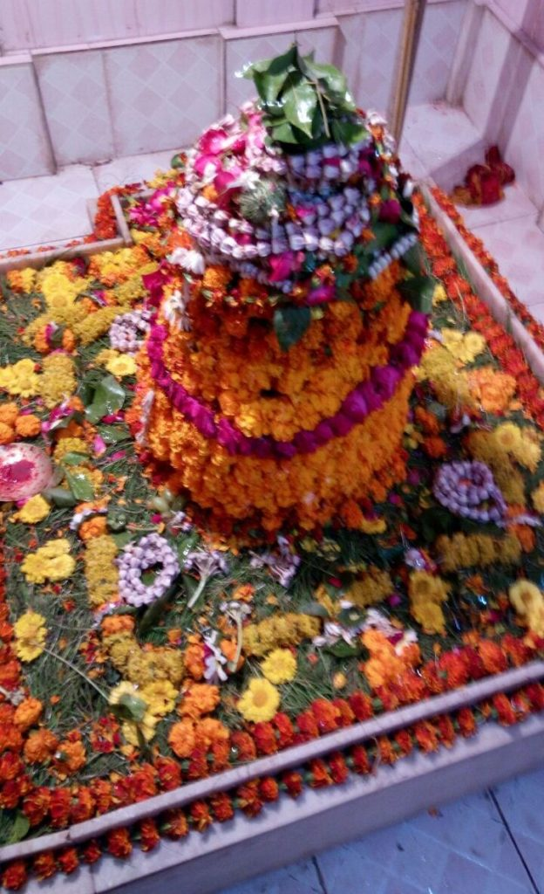

<?xml version="1.0" encoding="UTF-8"?><rss version="2.0"
	xmlns:content="http://purl.org/rss/1.0/modules/content/"
	xmlns:wfw="http://wellformedweb.org/CommentAPI/"
	xmlns:dc="http://purl.org/dc/elements/1.1/"
	xmlns:atom="http://www.w3.org/2005/Atom"
	xmlns:sy="http://purl.org/rss/1.0/modules/syndication/"
	xmlns:slash="http://purl.org/rss/1.0/modules/slash/"
	>

<channel>
	<title>Pita Maheshwar &#8211; Varanasi Temples</title>
	<atom:link href="index.html" rel="self" type="application/rss+xml" />
	<link>../../../../../index.html</link>
	<description>Temples of Varanasi as referred to in Kashi Khand</description>
	<lastBuildDate>Thu, 19 Jun 2025 05:16:46 +0000</lastBuildDate>
	<language>en-US</language>
	<sy:updatePeriod>hourly</sy:updatePeriod>
	<sy:updateFrequency>1</sy:updateFrequency>
	<generator>https://wordpress.org/?v=4.6.29</generator>
	<item>
		<title>PITA MAHESHWAR</title>
		<link>../../../../../shiva-temples/pita-maheshwar/index.html</link>
		<pubDate>Mon, 10 May 2010 02:51:54 +0000</pubDate>
		<dc:creator><![CDATA[admin]]></dc:creator>
				<category><![CDATA[Other Shiva Temples (L-R)]]></category>
		<category><![CDATA[Pita Maheshwar]]></category>
		<category><![CDATA[Shiva Temples]]></category>
		<category><![CDATA[maheshwar]]></category>
		<category><![CDATA[mukti maheshwar]]></category>
		<category><![CDATA[pita]]></category>
		<category><![CDATA[pita maheshwar]]></category>
		<category><![CDATA[pita maheshwar temple]]></category>
		<category><![CDATA[sheetla]]></category>

		<guid isPermaLink="false">../../../../../p=396.html</guid>
		<description><![CDATA[Lord Kartikeya was describing various important Shiv Lings in his narration in Kashi Khand (Chapter 68). (PITA MAHESHWAR JUST BEFORE POOJA ON MAHA SHIVRATRI) (PITA MAHESHWAR AFTER SHRINGAR ON MAHA SHIVRATRI) Pita Maheshwar is a Swayambhu (self manifested) Ling which appeared in Kashi alongwith several important Teerths (ponds). These Teerths (Ponds) may not be available [&#8230;]]]></description>
				<content:encoded><![CDATA[<p>Lord Kartikeya was describing various important Shiv Lings in his narration in Kashi Khand (Chapter 68).</p>
<p><strong>(PITA MAHESHWAR JUST BEFORE POOJA ON MAHA SHIVRATRI)</strong></p>
<p></p>
<p style="text-align: center;"><strong>(PITA MAHESHWAR AFTER SHRINGAR ON MAHA SHIVRATRI)</strong></p>
<p>Pita Maheshwar is a Swayambhu (self manifested) Ling which appeared in Kashi alongwith several important Teerths (ponds). These Teerths (Ponds) may not be available as on present day.</p>
<p><strong>A person who performs Pooja of Pita Maheshwar gives mukti to twenty generations in his family (Kashi Khand, ibid).</strong></p>
<p>&nbsp;</p>
<p><strong>&#8212;&#8212;&#8212;&#8212;&#8212;&#8212;&#8212;&#8212;&#8212;&#8212;&#8212;&#8212;&#8212;&#8212;&#8212;&#8212;&#8212;&#8212;&#8212;&#8212;&#8212;&#8212;&#8212;&#8212;&#8212;&#8212;&#8212;&#8212;&#8212;&#8212;&#8212;&#8212;&#8212;&#8212;-</strong></p>
<p><strong>Kashi Khand, Chapter 69, Shlok 38</strong></p>
<p><strong>पितामहेश्वर लिङ्गं तत्राऽभ्यर्च्य नरो मुदा</strong></p>
<p><strong>त्रि:सप्तकुलसंयुक्तो मुच्यते नात्र संशय: </strong></p>
<p>&nbsp;</p>
<p><strong>If a devotee performs pooja of Pita Maheshwar, he gives liberation to twenty one generations of his forefathers (including himself). There is no doubt about this. </strong></p>
<p><strong>&#8212;&#8212;&#8212;&#8212;&#8212;&#8212;&#8212;&#8212;&#8212;&#8212;&#8212;&#8212;&#8212;&#8212;&#8212;&#8212;&#8212;&#8212;&#8212;&#8212;&#8212;&#8212;&#8212;&#8212;&#8212;&#8212;&#8212;&#8212;&#8212;&#8212;&#8212;&#8212;&#8212;&#8212;&#8212;</strong></p>
<p><strong><span style="text-decoration: underline;"> </span></strong></p>
<h1>LOCATION OF THE TEMPLE</h1>
<p>The temple is located at No. Ck.7/92, Mohalla Sheetla Galli. The temple is approachable from Chowk upto which place, people can travel by Auto or Cycle Rickshaw.</p>
<p>&nbsp;</p>
<p><strong>Please watch our YouTube Video about Pita Maheshwar at following Link</strong></p>
<p>&nbsp;</p>
<p><a href="https://www.youtube.com/watch?v=FUjzly5dj8E&amp;t=53s">https://www.youtube.com/watch?v=FUjzly5dj8E&amp;t=53s</a></p>
<p>&nbsp;</p>
<p><strong><span style="text-decoration: underline;">TYPES OF POOJAS</span></strong></p>
<p><strong>The Shiv Ling is considered to be very powerful.</strong>  People can have darshan through a hole and the Ling is situated at a depth of over 30 feet below the ground level.  Old timers believe that the Ling is very powerful and it is advisable to have darshan through the hole only.</p>
<p>Poojas of the Ling are performed only on select few days, though darshan, as above, is allowed practically through out the year.  The special days, as mentioned by the Pundit, are all Mondays of Shravan, Shiv Ratri, Rang Bhari Ekadasi (Ekadasi day before Holi festival) and certain other Ekadasis.</p>
<h2></h2>
]]></content:encoded>
			</item>
	</channel>
</rss>
